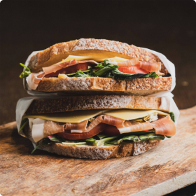
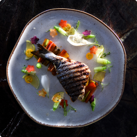
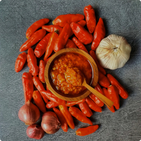
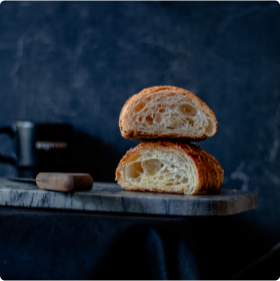
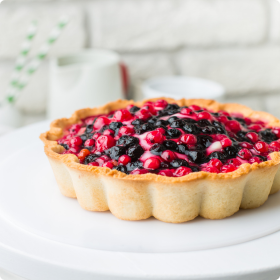
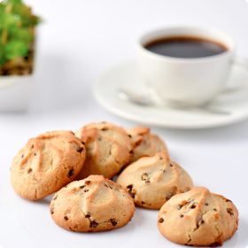

Főételek
Burgerek
Pizzák
Saláták
Levesek
Tészták
Tenger gyümölcsei
Köretek
Desszertek
Jégkrémek és Fagylaltok
Snackek
Muffinok és Pogácsák
Palacsinták
Piték
Kekszek és Sütemények
Levesek
Saláták
Tészták
Kategóriák
Burgerek
Szendvicsek és Wrappok
Pizzák
Saláták
Levesek
Tészták
Tenger gyümölcsei
Köretek
Szószok
Torták
Italok és Koktélok
Jégkrémek és Fagylaltok
Snackek
Muffinok és Pogácsák
Kenyerek
Palacsinták
Piték
Kekszek és Sütemények
Turmixok és Shakek
Vegetárianus
Ajánlatunk
Recept kategóriák
Burgerek

Szendvicsek és
Wrappok
Pizzák
Saláták
Levesek
Tészták

Tenger
gyümölcsei
Köretek

Szószok
Torták
Italok és
Koktélok
Jégkrémek és
Fagylaltok
Snackek
Muffinok és
Pogácsák

Kenyerek
Palacsinták

Piték

Kekszek és
Sütik
Turmixok és
Shakek
Vegetáriánus